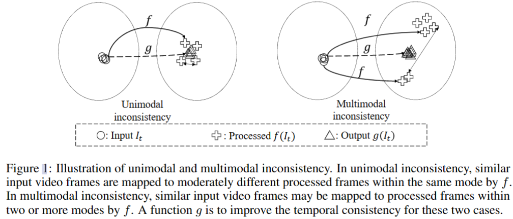
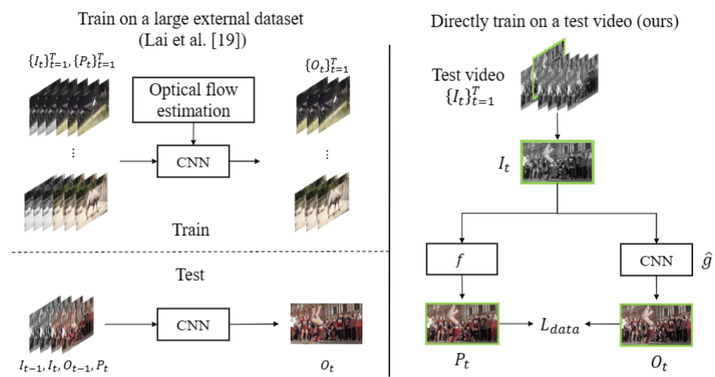
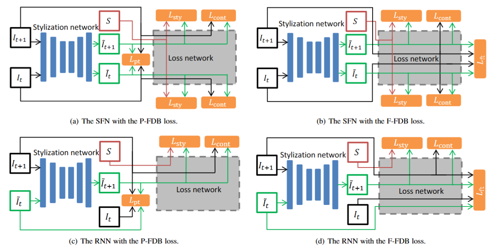

Blind Video Temporal Consistency via Deep Video Prior
Blind Video Temporal Consistency via Deep Video Prior
Abstract：
新的通用blind temporal consistency方法，该方法直接在一对原始的和处理过的视频上训练，不用再大型数据集上训练。与大多数基于光流的时间一致性方法不同，我们证明了时间一致性可以通过Deep Video Prior再视频上训cnn实现。
此外，还提出了精心设计的iteratively reweighted 训练策略，以解决具有挑战性的多模态不一致性问题。7个视频任务上验证方法，goodgood。代码：[ChenyangLEI/deep-video-prior: NeurIPS 2020] Blind Video Temporal Consistency via Deep Video Prior (github.com)
Introduction
我们的框架没有任何手工的时间正则化来提高一致性，方法与DIP（Deep Image Prior）有关，其观察到生成器网络的结构足以捕获自然图像的低级统计特征。DIP以噪声为输入，训练网络重建图像，网络能有效进行去噪，修复，超分等inverse problem。例如，无噪声图像遵循网络表示的先验，因此将在noise之前重建。我们推测视频中的flickering artifacts与时域中的噪声类似，可以通过视频先验进行矫正。
只用测试数据，不用训练数据。
另一个迭代重加权训练（IRT）策略，以解决多模态不一致问题。
Background
令为t时刻的输入帧，处理后的帧为，f可以是任何处理算法，blind video temporal consistency旨在设计一个g来生成一个temporally consistent video： for 。
**Temporal inconsistency：**当同一对象在中的视觉内容不一样，就有时间不一致性，主要有两种类型：unimodal inconsistency和multimodal inconsistency（单/多模态）。其中是一致的，是不一致的，对于某些任务，单个输入会有多个结果（例如着色的不同颜色），因此的不一致性更明显，如图1右侧。

**Correspondence-based regularization：**传统方法用帧间的correspondence来提高一致性，如光流和PatchMatch。处理前后的correspondence应共享相似的特征（color or intensity），regularization loss 定义为最小化输出帧之间的correspondence之间的距离。重构损失用于最小化P和O之间的距离，对于blind一致性，采用损失函数：
其中是到的光流，W是warping function，注意注意，我们的不需要光流，因此不需要。
有点问题啊感觉这个。
Method
Deep Video Prior(DVP):
之前的工作设计了巨多，但其应该可以通过DVP隐式实现：视频帧中对应patch的CNN输出应该是一致的。该先验基于一个事实：在训练的早期阶段，两相似patch在CNN中的输出是相似的；同一物体在不同的视频帧中有相似的外观。DVP允许恢复大多数视频信息，同时在完全过拟合到所有信息（inconsistency artifacts）之前消除闪烁。
如下图所示，我们提出使用全卷积网络来模拟original image operator f，同时保持temporal consistency，与光流的那个不同，训练g只用一个视频，一次迭代只用一帧。我们随机初始化，然后在每次迭代中用single data term进行优化，无需任何显式regularization:

其中代表二者的distance，如L1，当接近flickering overfitting时，我们停止训练。这样能缓和单模态不一致性，取g为U-Net，Ldata为LPIPS
Frame Difference-Based Temporal Loss for Video Stylization
video stylization 由于temporal incoherence会导致flickering artifacts，而光流本身还不够优秀，如遮挡等。原始视频是时间一致的，重构后的也应该时间一致。而frame difference唯一决定了原始视频中的像素演化，因此生成视频的两连续帧间的差值可以做成原始视频中对应连续帧之间的差值相似。可以设计一个类似的损失，于任何原始损失结合，加强temporally coherence。
直接这样做会降低重构质量，因此我们在网络的特征空间中引入了frame difference，并与像素空间的组合成为最终损失函数。称其为frame difference-based（FDB）loss，其能显著降低计算成本，且于OFB结果类似。
Temporal loss
原始视频应是temporally coherent的，且这些相干性编码在帧间的差异中，重构后的视频应该也具有这些coherence，这样才能更稳定。用表示原始帧，为重构帧，temporal loss定义为：
其中N为每帧像素数，T为总共帧数，且：
其中表示特征层数，若l=0，即为像素空间中的帧差。在像素空间中定义的frame difference temporal loss称为pixel-FDB loss，用表示，若，即在特征空间中计算frame difference，被成为feature-FDB loss，用，二者加权得到combined-FDB loss，用表示。
事实上，测量帧差并不一定要连续，任何一对帧差都能用，性能相似。
Application to video stylization models
用SFN和RNN验证，SFN没用，只看RNN。模型由stylization网络和loss网络构成，前者生成视频帧，我们将原来的OFB loss替换为FDB loss。

trash 决定不看这篇了换一个：
突然想到，
实验：gt帧之间作差可视化，然后重构帧之间作差可视化，如果重构的这个值很差，那说明这个损失可行！ccp和另一个损失就得试了，毕竟基于无监督。